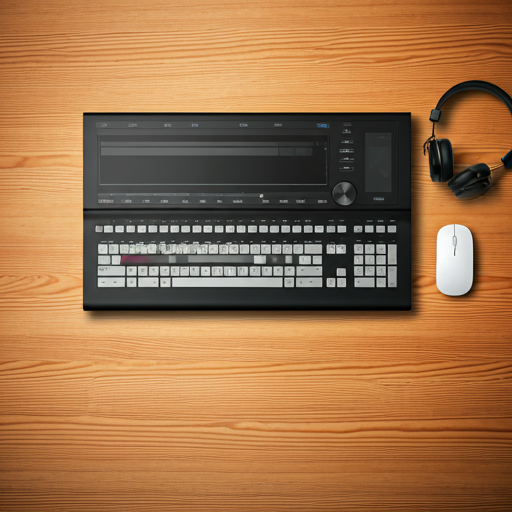
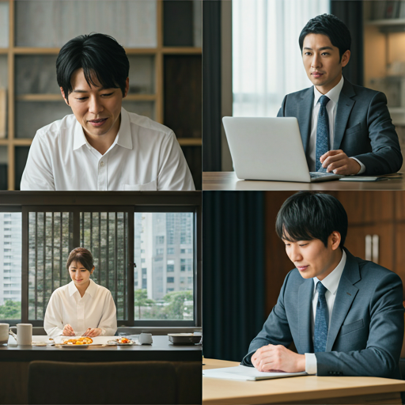

Why Frame?
FRAMEが選ばれる
FRAMEが選ばれる
3つの理由
ヒアリングから納品まで、一貫してサポート。あなたのビジョンを形にするための最適なパートナーとして伴走します。

01
ワンストップ対応
企画構成、撮影、編集まで一貫して担当します。連絡の不一致がなく、当初のコンセプトを忠実に再現した映像制作が可能です。

02
幅広いジャンル
YouTube動画、企業インタビュー、PR動画、イベント、ウェディングなど、多種多様なニーズに応える柔軟なクリエイティブを提供します。

03
個人ならではの
個人ならではの
コストパフォーマンス
制作会社のバックオフィス費用がないため、適正な価格で高品質な映像をお届けできます。急な変更にも迅速に対応可能です。